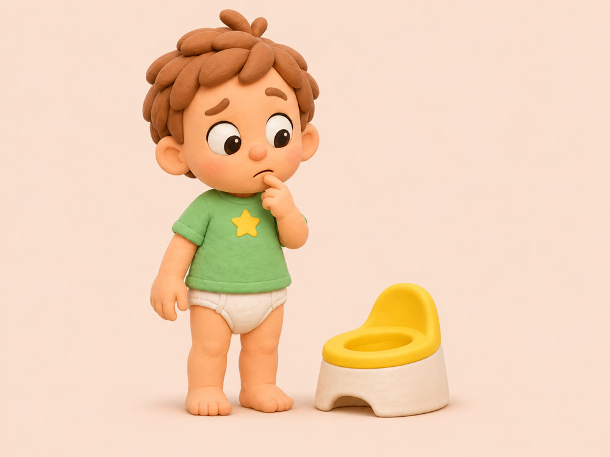

Туалетный навык без давления и стыда
Если ребёнок боится горшка, прячется, ходит только в подгузник или только стоя, проблема редко решается сама. Разбираем причину и идём по плану.

Знакомые ситуации
- Ребёнку 3-4 года, а он всё ещё в подгузнике
- Какает стоя в подгузник, прячется, избегает горшка или унитаза
- Дефекация происходит только во сне, ночью
- Функциональный запор: ребёнок терпит по 3-4 дня и испытывает боль
- Страхи, протесты, ритуалы
Что обычно стоит за этим
Страх, привычная поза, ритуалы, удерживание, протест. У каждой семьи свои причины, поэтому сначала мы смотрим на вашего ребёнка, а потом выбираем шаги.
Выберите, как вам удобнее
Самостоятельные материалы и работа со специалистом. Это разные предложения, их можно сочетать.
5 видеолекций и практические материалы. Пошаговая система, от 2,5 лет.
Туалетный навык без давления: работа с устойчивыми привычками.
Разбор ситуации, цели и план шагов.
Работа по плану, обратная связь и корректировка до результата.
Занятия по туалетному навыку вместе с другими родителями.
Пять этапов
Идём от причины к навыку, без давления и стыда.
- 1ПричинаРазбираем, что мешает: страх, ритуалы, привычка.
- 2ПодготовкаПространство, расписание, визуальная опора.
- 3ПланМаленькие шаги от знакомства с горшком к самостоятельности.
- 4ПоощрениеМотивация, которая работает и не давит.
- 5ЗакреплениеЧто делать при откатах и как закрепить навык.
Что пишут родители
Туалетный тренинг онлайн: от запроса до результата
Видео из историй. Публикуется с согласия родителей, лицо ребёнка скрыто. Работа шла онлайн через маму.
Решила вам написать. У нас такая ситуация необычная. Сын какал только лёжа, и мы надевали памперс. Запоры у него были с двух, и мы принимаем Форлакс. И две недели мы делали всё по вашей книге, и вчера перед сном он впервые покакал на горшок!!! Ну мы с мужем прибываем в шоке)))
Сын последнее время стал сам ночью просыпаться и писать в горшок, мы даже не замечаем этого. И какает тоже почти всегда в горшок уже неделю: исключение было 2 раза на улице в памперс, а так спокойно на даче и дома всё удаётся!!!
Тексты из личных сообщений родителей, опубликованы с согласия.
Упражнение «Туалетные дела Тёмы»
Картинки по шагам и вопросы для ребёнка: что и в каком порядке мы делаем.
Открыть упражнениеО туалетном навыке
С какого возраста подходит курс?
Видеокурс «Дефекация сидя» подходит для детей от 2,5 лет. Руководство описано для возраста 2,5-5+.
Курс, руководство или консультация?
Курс и руководство для самостоятельной работы. Если нужна обратная связь специалиста, выбирайте консультацию или сопровождение.
Что, если ребёнок боится?
Страх разбираем отдельно и вводим привыкание маленькими шагами. Принуждения в плане нет.
Напишите, с чем вы пришли
Достаточно нескольких слов о ребёнке и запросе. Я отвечу и предложу формат.
Выберите мессенджер, который вам удобнее. VK и MAX открываются без VPN. Запись и оплата пока проходят через личные сообщения. Если вы за границей, способ оплаты (например, PayPal) и валюта обсуждаются индивидуально.